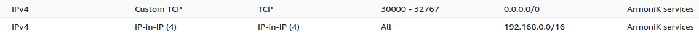

AWS deployment using kubeadm
Introduction
This project presents the creation of a small cluster on AWS. The cluster will be composed of a master node and three worker nodes.
The files to achieve this deployment are available here
We mount a NFS server on the master node too, from which workers will upload .dll.
NOTE: You must have an AWS account to use these sources to create a cluster.
AWS credentials
You must create and provide your AWS programmatic access keys in your dev/test environment:
mkdir -p ~/.aws
cat <<EOF | tee ~/.aws/credentials
[default]
aws_access_key_id = <ACCESS_KEY_ID>
aws_secret_access_key = <SECRET_ACCESS_KEY>
EOF
Generate a SSH key pair
Use the following procedure to generate a SSH key pair and save it in ~/.ssh:
ssh-keygen -b 4096 -t rsa -f ~/.ssh/cluster-key
The generated SSH key pair cluster-key will be used to ssh the instances of the cluster.
Deploy a cluster
We will create a cluster on AWS composed of four ec2 instances:
- a master node
- three worker nodes
set the value of the parameter
ssh_keywith the content of the public SSH key~/.ssh/cluster-key.puband the path to the private SSH key, for example:ssh_key = { private_key_path = "~/.ssh/cluster-key" public_key = "ssh-rsa AAAAB3NzaC1yc2EAAAADAQABAAABAQD3F6tyPEFEzV0LX3X8BsXdMsQz1x2cEikKDEY0aIj41qgxMCP/iteneqXSIFZBp5vizPvaoIR3Um9xK7PGoW8giupGn+EPuxIA4cDM4vzOqOkiMPhz5XK0whEjkVzTo4+S0puvDZuwIsdiW9mxhJc7tgBNL0cYlWSYVkz4G/fslNfRPW5mYAM49f4fhtxPb5ok4Q2Lg9dPKVHO/Bgeu5woMc7RY0p1ej6D4CKFE6lymSDJpW0YHX/wqE9+cfEauh7xZcG0q9t2ta6F6fmX0agvpFyZo8aFbXeUBr7osSCJNgvavWbM/06niWrOvYX2xwWdhXmXSrbX8ZbabVohBK41 email@example.com" }set the ID of an existing VPC and its subnet:
vpc_id = "<VPC_ID>" subnet_id = "<SUBNET_ID>"
To deploy the cluster execute the command:
make all
The outputs display the public IP of each instance, like:
master_public_ip = {
"ip" = "54.185.23.147"
"name" = "i-0168c936872babdf2"
}
worker_public_ip = [
{
"ip" = "54.184.45.26"
"name" = "i-06b8aeab6cb62750a"
},
{
"ip" = "35.87.249.26"
"name" = "i-0e4c32d39bfcf8aac"
},
{
"ip" = "54.244.169.65"
"name" = "i-0c691f1d971e62150"
}
]
Prerequisites
You must open the following inbound ports: 
Accessing the cluster from outside
Copy /etc/kubernetes/admin.conf from the master on your machine located outside the cluster as ~/.kube/config. Then
replace localhost or the private address IP with the public IP of the Kubeadm server (master node). kubectl can now
manage your Kubeadm cluster from your local machine.
Destroy the cluster
To delete all resources of the cluster created on AWS, execute the command:
make destroy